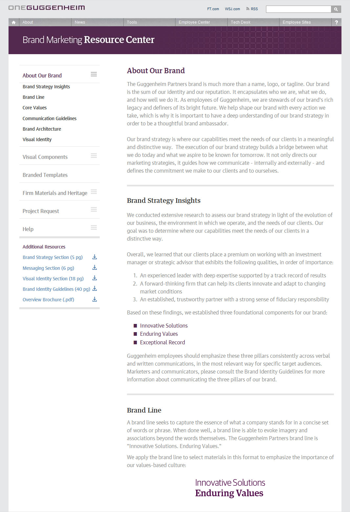

This internal website connects employees with content that educates, empowers, and enriches the company culture.
Proposed landing page redesign. As the visual design and UX lead for this SharePoint site, the ongoing challenge is to deliver a consistent experience despite the variety of content and user goals. Certain sections are a single page with limited actions, while others require a deeper understanding of user paths and expectations. Order is maintained by an enforcement of the established style and pattern library. Constant dialog with content owners, project managers, and the development team is a necessity.
Brand Resource Center. A recent brand refresh created the need to educate employees around the world on the new strategy and equip them with resources to communicate in a unified way. A library with downloadable branded templates was built along with detailed style guidelines for using the visual and verbal components of the new brand.

Funtional pages. The corporate directory provides a list of employee information. There are a number of use cases, but among the most interesting is using it as a way to identify individuals or teams prior to meetings. The event photos page allows employees to view and request images taken at employee events across the firm.
Process work and wireframes. The following images show details of early explorations on the landing page, select wireframes, and some loose sketching.